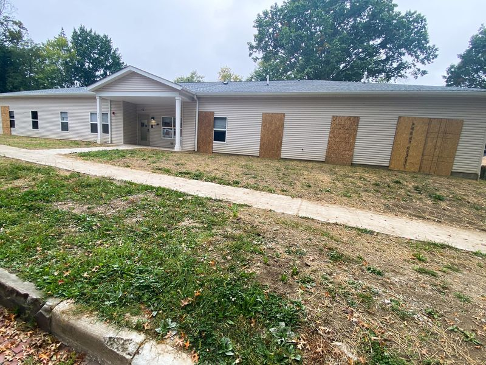

Mobile uploads
This is 808 Allyn St. in Akron.
I don’t think I know the people who run this house. So my understanding of it is from homeless people that have lived there and friends of people that have lived there. If my understanding of this is incorrect in any of this story please let me know.
This is a new construction multi-unit house that opened this last December. It was built for homeless people to live in.
Chronically homeless people who were living in the woods for years were given this place to live. I believe they had to pay $50/month to stay there.
It is 9 months later and look at this place. Most of the windows are boarded up. I saw other windows broken out that need to be boarded up. There was an electrical contractor in the driveway. I have heard that electrical wiring has been torn out. There is apparently many thousands of dollars of damage that was done to this place.
I was there for maybe 10 minutes. A woman walked up to the door, tried to enter a code on the security pad to get in. It didn’t work and she wandered off. I would imagine the entire neighborhood knew that code.
I’m not going to lie. News of this destruction and failure brought me a lot of joy and amusement. It made me happy because I felt like I wasn’t the only loser to fail miserably at trying to house homeless people.
But when I got to this house, all that selfish, self righteous joy evaporated. All I felt was sadness. Sadness for the people who tried so earnestly to make a beautiful home for our homeless neighbors who have lived in the woods for years. And sadness for the homeless people who couldn’t make it work.
As I understand it, most, if not all, the people are evicted or will be evicted from the house.
I don’t know who all lived there. But I know one person very well. I too tried to house her and had to evict her. She never paid rent and she stopped taking her dog outside to go to the bathroom when she lived at our house.
I understand that she had 8 cats and her boyfriend move into this house.
I love her very much. She lived in a tent for years at our tent village. She did really well there. She is so smart, so thoughtful. And she is filled with love. There is simply no way she is not going to help the people and animals around her.
Most chronically homeless people just WILL NOT turn away their friends. They have been blessed with a wonderful home. It is against everything they live for to turn people and animals away. Their community is life to them.
Us middle class White Americans don’t live by that code. We are isolated and extremely protective of our space and belongings. It’s a cold and cruel and selfish form of existence. But it’s the only way to not sink ourselves. That said, we could definitely be a little more open and giving without risking much of anything.
The answer always is balance. The homeless people who take in every stray human and animal are wrong. The middle class people who won’t even make eye contact with a homeless person they walk by are also wrong. We all can learn from each other.
The point I’m often making is that Housing First is not always the answer. Some people simply are not currently suited to live in a house. They hoard belongings, animals, people and trash. That’s just the truth of the matter.
We must have scales of living. Isolated but secure tents for violent and thieving homeless people. Group tent communities for people who are able to live in a community. Tiny houses, of varying sizes and utilities for people who can reliably pay rent. And then traditional housing goes to families and people who can handle all the obligations that go along with traditional living.
The Housing First people don’t want you to know this reality because they make all their money housing homeless people. They would have to retool and reorganize if the truth was told and acted on.
I’m really sorry this house didn’t work. But it looks like they aren’t giving up. As a fellow failure in this space, here is my advice: only house people with government checks. Older people are easier than younger people. Have zero tolerance for hoarding. Probably don’t allow any animals. Put security cameras in the common areas and outside. Evict people the first time they violate any of your rules. You will eventually find a good group of people.
I’m not interested in being that guy. That’s the main reason I’m not going to fix up my house. I’m heading back out into the woods and abandoned houses this winter. That’s where my people are. And that’s where I want to be.